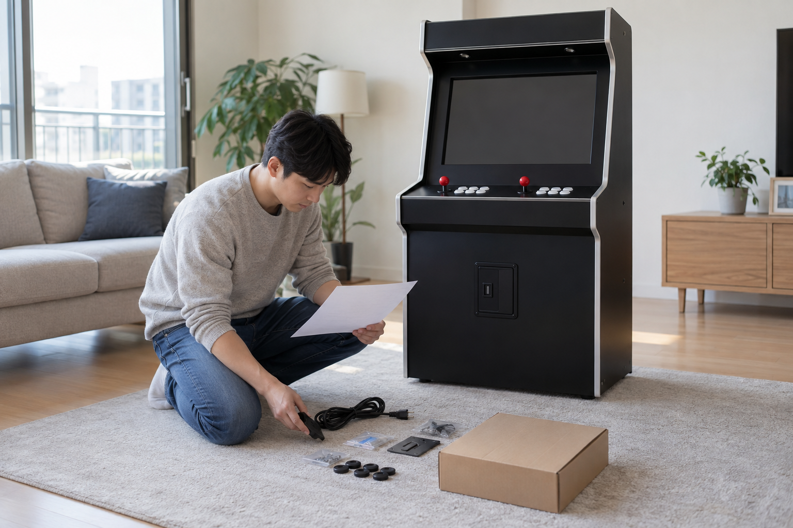
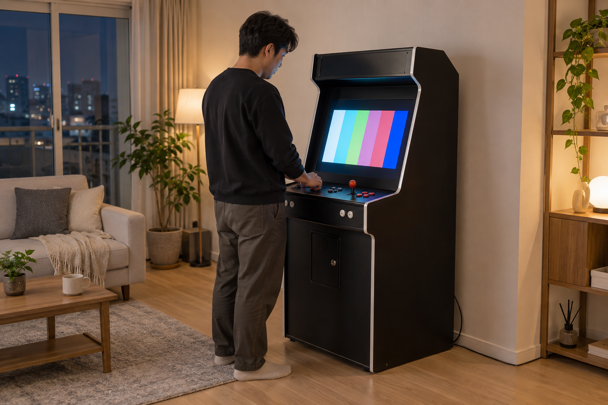

오락기를 처음 설치할 때는 전원을 바로 켜기보다 주문한 제품명과 동봉 구성품이 맞는지 먼저 확인해야 합니다. 그다음 놓을 자리와 전원·케이블 상태를 살피고, 제품 안내 순서대로 연결한 뒤 화면·소리·조작을 하나씩 점검하세요.

제품명과 구성품을 먼저 맞춰보세요
상자와 주문 내역의 제품명이 같은지 확인하고, 안내서에 적힌 본체·전원선·연결선·액세서리를 바닥에 펼치지 말고 한곳에 정리해 대조하세요. 겉모양이 비슷해도 케이블이나 게임팩 구성이 다를 수 있으므로 남는 부품을 임의로 연결하지 마세요. 노리박스 제품 목록에는 TV 연결형, 스탠드형, 좌식형과 오락기용 220V 전원케이블이 각각 별도 상품으로 안내되어 있어 정확한 주문 제품을 기준으로 확인해야 합니다.
설치 전에 제품명과 동봉 구성품을 맞춰야 잘못된 케이블 연결을 피할 수 있습니다.
- 주문 내역과 상자의 제품명 확인하기
- 안내서의 구성품 목록과 실제 부품 대조하기
- 케이블과 작은 부품을 용도별로 나누기
- 파손, 눌림, 빠진 구성품이 보이면 연결 전에 기록하기
설치 위치와 전원 주변을 살펴보세요
기기가 흔들리지 않는 평평한 바닥인지, 문과 서랍을 여는 데 방해되지 않는지 확인하세요. 통풍구 위치와 필요한 여유 공간은 제품 안내를 따르고, 전원선이 통로를 가로지르거나 가구 아래에 눌리지 않게 동선을 잡으세요. 디스플레이 제조사의 기본 안내도 기기 뒤나 아래의 통풍구를 천이나 가구로 막지 않도록 설명합니다.
기기를 놓을 자리는 수평과 흔들림, 통풍구 주변, 전원선 동선을 함께 확인하세요.
설치 공간을 정하는 기준은 우리 집 공간에 맞는 오락기 형태에서도 확인할 수 있습니다.
케이블은 안내 순서대로 연결하세요
전원이 꺼진 상태에서 포트 모양과 안내서 그림을 대조하고, 억지로 밀어 넣지 말고 맞는 케이블을 하나씩 연결하세요. TV 연결형은 화면 입력과 전원 연결을 구분하고, 스탠드형은 제품별 본체·화면 전원 구성을 확인하세요. 연결을 마친 뒤에는 케이블이 조작부나 기기 아래에 끼지 않았는지 다시 살펴보세요.
전원을 넣기 전에는 포트 모양과 안내 순서를 대조하며 케이블을 하나씩 연결하세요.
전원 순서가 헷갈리면 오락기를 안전하게 켜고 끄는 방법을 먼저 확인하세요.

처음 켠 뒤 기능을 하나씩 확인하세요
제품 안내 순서대로 전원을 켠 뒤 화면이 나오는지, 소리가 들리는지, 조이스틱과 버튼이 반응하는지를 따로 확인하세요. 한 번에 여러 설정을 바꾸지 말고 이상이 있으면 제품명, 연결 상태, 화면에 보이는 내용과 문제가 나타난 조작부를 기록하세요. 케이블을 반복해서 뺐다 끼우거나 본체를 열기 전에 판매자에게 현재 상태를 설명하는 편이 좋습니다.
첫 작동에서는 화면·소리·조작을 나눠 확인해야 이상 위치를 설명하기 쉽습니다.
현재 노리박스 오락실게임기와 관련 제품은 제품자세히보기에서 확인하세요.